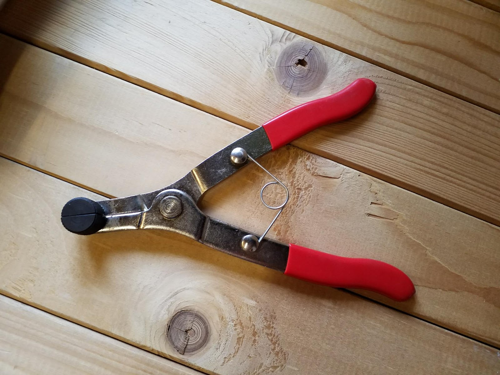

Project Z750 part 16
The piston puller has arrived. it looks like a pair of pliers, but works opposite so that when you press the handles the “nose” of the pliers expands. the idea is that you put the nose into the piston, grip very hard and turn and pull the piston so that it comes out.

the theory is great, but actually using one isn’t. in use you are trying to grip as hard as you can, and at the same time trying to pull the piston out of the caliper (as well as maybe turning it if it’s stuck like mine).
it took a herculean effort to get one of the pistons out, I was gripping as if my life depended on it, trying to twist the piston and pull it out of the caliper. when it turned (a little) it gave me renewed hope of getting both pistons out, and eventually the piston was out, so just one more left.
so now on to the fifth and final brake caliper piston. I put the piston puller tool into the caliper, gripped with all my might (no laughing please) and twisted. Well something moved, but it wasnt the piston, it was just the tool twisting round inside the piston. oh well, I guess I’m getting used to it all going wrong.
I tried this until my arm hurt from gripping the tool so much, and then gave up for the day. This piston was stubborn (or maybe just really comfortable, and not wanting to come out of it’s little home).
Next day, I tried again. Tool inside piston, grip, twist and pull. Nope, nothing. this piston was stuck fast. I decided then that the tool I bought (which was cheap) wasn’t going to work here, so it was out with the mole grips, a scrap of leather over the end of the piston, grip and pull.
The first few times I tried, the mole grips just slipped off the piston, but eventually, I tightened them up enough so that the piston started to move. Finally, I’m getting somewhere.
eventually the piston came out. Of course it was ruined, but I knew that using the mole grips was going to damage it.
I now have three calipers and four pistons needing cleaning (I wont bother trying to clean the fifth piston as it is the damaged one).